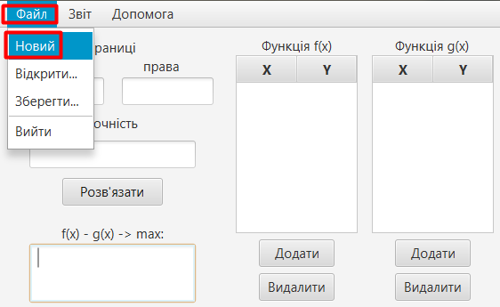
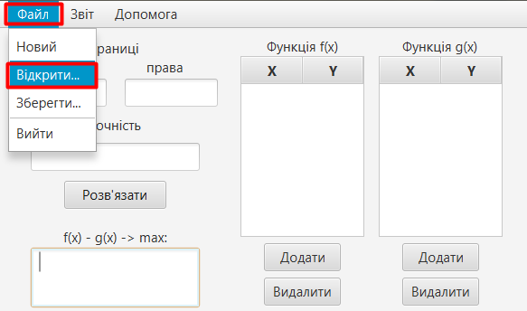
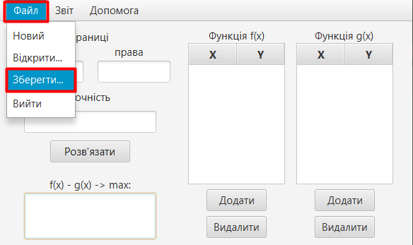
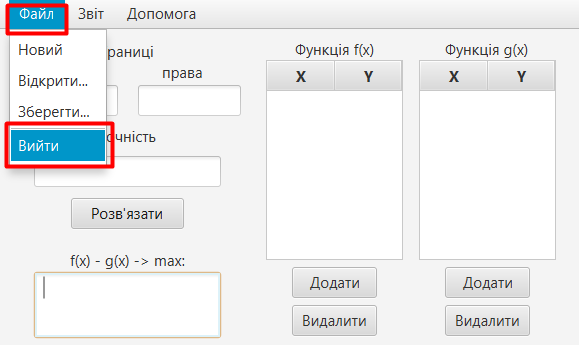

1. Для того, щоб створити новий набір даних треба натиснути:
2. Для того, щоб відкрити набір даних, що був раніше створений, слід натиснути:
3. Для того, щоб зберегти дані, що були уведені раніше у програмі:
4. Для коректного вихіду з програми:
